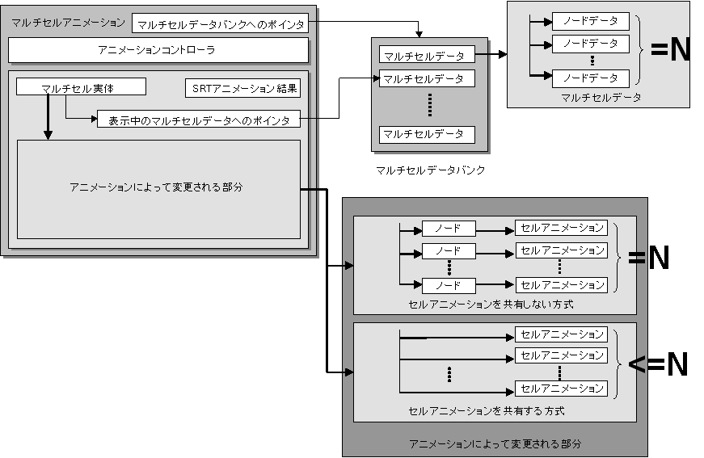
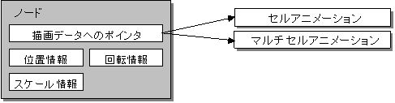

マルチセルアニメーション概要
概念図

説明
マルチセルアニメーションは、NITRO-CHARACTERで作成されたマルチセルアニメーションを再生するためのものです。
マルチセルアニメーションは、内部にアニメーションコントローラを持ち、このアニメーションコントローラを用いてマルチセルをアニメーションさせます。
マルチセルは、複数のセルアニメーションによって構成されています。
マルチセルアニメーションの内部データ
マルチセルデータバンクへのポインタ
メインメモリ上に読み出したマルチセルデータバンクへのポインタが格納されます。
マルチセルデータバンクは静的なデータであり、書き換えられることは有りません。
マルチセルアニメーションで使用されるマルチセルは、このポインタが指し示すマルチセルデータバンクに含まれていなければなりません。
表示中のマルチセルデータへのポインタ
アニメーション再生により、現在画面に表示されているマルチセルへのポインタが格納されます。
このポインタが指し示すマルチセルは、マルチセルデータバンクへのポインタが指し示すマルチセルデータバンクの中に存在します。
表示中のマルチセル実体の内部メンバとして存在しています。
SRTアニメーションの結果
アニメーション再生により変化した、マルチセルの位置、回転、スケールが格納されます。
マルチセル実体
表示中のマルチセルの実体を現す概念です。表示中のマルチセルデータへのポインタを内部に保持します。
また、アニメーションによって更新される情報を保持しています。
アニメーションによって更新される部分
アニメーションによって更新される情報は、マルチセル実体に保持されています。
具体的には、マルチセルを構成するセルアニメーション実体とその実体の位置を記憶するノードなどから構成されます。
本情報のランタイム上でのデータ構造はセルアニメーションを共有する、しない方式の2種類が存在します。
ユーザは初期化関数に与えるオプションによって用途に合ったデータ構造を選択して使用することが可能です。
セルアニメーションを共有する方式を指定した場合は、
同一のセルアニメーション再生を行うセルアニメーションを複数ノードで共有します(つまり、総ノード数 N >= セルアニメ数 となります)。
また、後述のノード状態(SRTパラメータ、可視フラグなど)を保持しません。
そのため以下のような特徴があります。
･実体生成の際に必要なメモリ量が少ない。
･アニメーション更新処理負荷が軽い。
･アフィンパラメータ使用量が少ない（同一のセルアニメーションを描画するノード間ではアフィンパラメータを共有します）。
この特徴は、マルチセル内に同一のセルアニメが複数存在するほど顕著に現れます。
一方、セルアニメーションを共有しない方式を指定した場合、ノードごとに個別にセルアニメーション実体が確保されます(つまり、総ノード数 N == セルアニメ数 となります)。
また、ノードの状態を保持するデータ領域を保持します。
そのため、ユーザプログラムによる、ノード情報やセルアニメーションの状態(位置、再生アニメーション設定)の上書きが可能となります。
ユーザプログラムによるデータの書き換え処理などの必要がない場合は、セルアニメーションを共有する方式を使用してください。
ノード

ノードは、描画データに関する情報を格納する為のコンテナ（容器）です。 ノードには、描画データへのポインタと、描画オブジェクトの仮想画面上の位置、回転、スケール、アフィン変換パラメータ設定情報等を保持します。
マルチセルの実体の構成要素としてライブラリ内部で使用されています。
参照
なし
履歴
2005/01/31 "アニメーションによって更新される部分"についての説明を追加
2004/12/06 初版